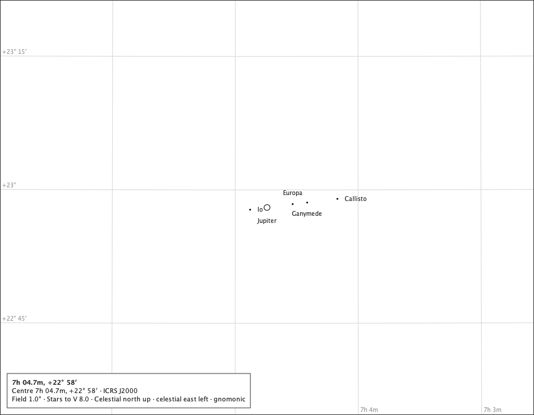

Jupiter and its moons
Jupiter and four moons at 1°

- Region
- Gemini
- Field
- 1°
- Ink
- Jupiter's disc, the four moon marks and their names are Jupiter-and-moons module ink; everything else is the core chart.
- Source
- docs/studies/gallery/jupiter-and-moons.png
- Produced
- Composed by the production chart component with the real Jovian module and body painter (GalleryPageMain); regenerated and compared by make evidence-contracts. Sprint 45 tree.